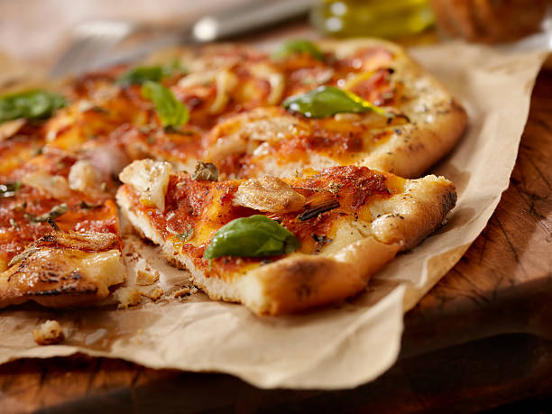

Home
Receta Pizza

Pizza recién sacada del horno.
La pizza es un plato hecho con una masa plana, habitualmente circular, elaborada con harina de trigo, levadura, agua y sal que tradicionalmente se cubre con salsa de tomate y mozzarella y se hornea a temperatura alta en un horno de leña. Se venden en pizzerías y las elaboran pizzeros.
Ingredientes:
- Harina
- Levadura
- Tomate triturado
- Queso
- Albahaca
Pasos a seguir:
- Preparamos la masa
- Ponemos tomate triturado a la masa
- Añadimos el queso y la albahaca
- Cocinamos en horno precalentado a 220 grados 10 minutos
- Sacamos y a disfrutar